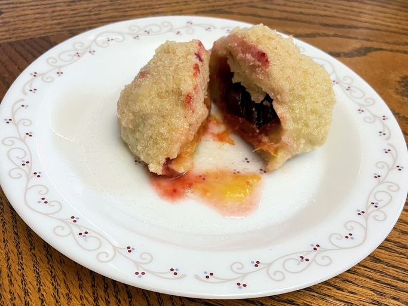

Knedle Recipe

Plum Dumplings
Sweet dark plums are wrapped in a potato dough, and boiled before rolling in sweetened toasted bread crumbs. These take some time to make, but to me, they're well worth the effort.
Ingredients
- 4 large potatoes
- 1/2 tsp salt
- 1 tbs butter, softened
- 2 eggs, beaten
- 1/2 cup farina
- 1 cup all-purpose flour
- 12 black plums
- 1/2 cup white suggar
- 1/2 cup butter, melted
- 1 cup bread crumbs
Steps
- Scrub potatoes, and place them into a large pot with enough water to cover. bring to a boil, and cook until tender, about 40 minutes. Drain, and cool. When potatoes are cool enough to handle, peel, and press through a ricer into a large bowl. Set aside to cool. This part of the process can be done as much as one day in advance.
- In a large bowl, mix together the prepared potatoes, salt, egg, and 1 tablespoon of butter until well blended. Gradually stir in the farina, and then the flour. If dough is still wet, more flour can be mixed in. Turn dough out onto a floured surface, and knead until smooth, about 5 to 10 minutes.
- Split open each plum where it cracks, and remove the pit. Replace each pit with a sugar cube, and close.
- On a floured surface, roll out the dough to 1/4 inch thickness. Cut into twelve 3 inch squares. Place one plum into each square, and bring the corners around to the top. Pinch together all of the seams to seal.
- Bring a large pot of water to a slow boil. Place about 4 dumplings into the water at a time. Once they float to the surface, continue to cook them for about 5 more minutes. Transfer cooked dumplings to a covered bowl, and keep warm.
- Melt the remaining 1/2 cup of butter in a small skillet over medium heat. Stir in bread crumbs, and 1/4 cup of sugar. Continue to cook and stir until browned. Remove the bread crumbs to a plate, and roll warm dumplings in the mixture until entirely coated. To serve, place a dumpling or two on a plate, sprinkle with a little sugar and a little extra melted butter, if desired.